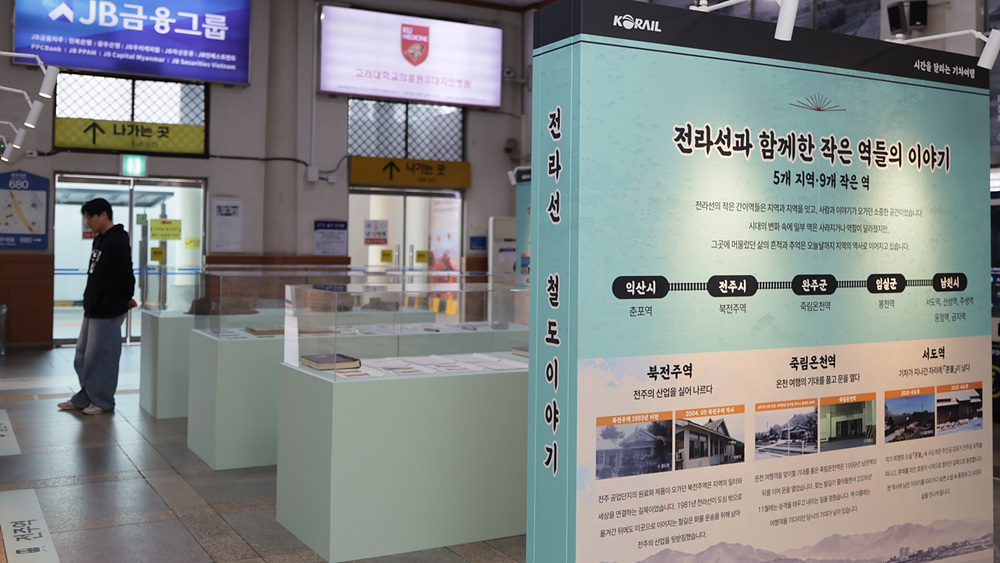

고속철도역 자리와 역세권 경제, 국내외 연구 네 편
쑤저우 도심 역 창업 증가, 외곽 역은 감소
독일 역 178곳 밀도, 국내 역세권 67곳 수요
AI경제저널=김갑봉 기자 | 국토교통부는 11월 5일 고속철도 통합 운행 60일 동안 하루 평균 32만2000명이 열차를 탔다고 밝혔다. 지난해 같은 기간보다 12.6% 많았다.
같은 기간 수서 축 이용객은 지난해 같은 기간보다 29.5% 늘었다. 고속철도와 일반열차를 갈아탄 하루 평균 이용객은 54.4% 늘었다.
배성호 등 연구진은 역 승하차 인원을 역세권 잠재수요 지표로 썼다. 국제 학술지 논문 셋은 역의 자리와 도시철도 연결, 역 주변 밀도에 따라 역세권 효과가 달랐다고 분석했다. 국내 학술지 논문 하나는 국내 역세권 67곳의 개발 여건과 수요를 비교했다.

쑤저우 고속철도역 2km 안 창업
중국·영국·미국 연구진 7명은 쑤저우 고속철도역 넷의 효과를 분석했다. 제1저자는 왕란(Lan Wang)이다. 논문은 2025년 『교통연구 A』(Transportation Research Part A)에 실렸다. 쑤저우는 상하이와 난징 사이 도시다.
연구진은 2005~2015년 쑤저우 시내 5개 구에 새로 등록한 기업 5만9537곳을 모았다. 이를 가로세로 1km 격자 1973개에 나눠 담고 개통 전후를 견줬다.
역에서 2km 안 격자마다 개통 뒤 해마다 새 기업이 11~13곳 더 생겼다.
효과는 개통 3~4년째부터 드러났다.
지식집약 서비스업과 상업·운수·숙박업이 크게 반응했다. 제조업은 유의한 증가가 없었다. 연구진은 제조업이 생산기지와 화물에 기대는 업종이라고 설명했다.
연구진은 개통 뒤 4~5년의 단기 효과를 본 한 도시 사례라는 점을 한계로 들었다.
도심에서 먼 역의 창업 감소와 시가지 확장
역마다 결과가 달랐다. 도심의 쑤저우역 주변은 해마다 새 기업이 27곳 더 생겼다. 개발구 안 공업원구역역 주변은 23곳 늘었다.
도심에서 약 20km 떨어진 쑤저우북역 주변은 2곳 넘게 줄었다.
연구진은 걸어서 도시철도로 갈아탈 수 있는 역 묶음에서는 효과가 유의했고, 그렇지 않은 역 묶음에서는 유의하지 않았다고 밝혔다. 외곽 역의 자리를 고를 때 주변 토지계획을 함께 세우고, 역을 도시철도와 이어야 한다고 제언했다.
중국 연구진 리신(Xin Li)·마샤오둥(Xiaodong Ma)은 중국 280개 도시의 2001~2016년 자료를 분석했다. 논문은 2021년 『교통·토지이용 저널』(Journal of Transport and Land Use)에 실렸다. 고속철도가 들어선 도시는 시가지가 4.1% 더 넓어졌다.
역이 도심에서 1% 멀어질 때마다 시가지는 0.5% 더 넓어졌다. 역이 멀수록 시가지 단위 면적당 지역총생산은 낮았고, 통계적 유의성은 10% 수준이었다. 연구진은 고속철도 신도시의 무분별한 과잉 개발을 막아 「유령도시」를 피하자고 제언했다.
독일 장거리역 178곳의 밀도
독일 뮌헨공대 요하네스 모저(Johannes Moser) 연구진은 독일 장거리 철도역 178곳을 분석했다. 논문은 지난 5월 같은 학술지에 실렸다. 역 반경 800m 안 지식집약 기업 수를 셌다.
역 주변 밀도가 1표준편차 높으면 지식집약 기업은 57.3% 많았다. 장거리 열차 출발이 많을수록, 도심에 가까울수록 기업이 많았다. 업종별로는 고기술 서비스업이 장거리 열차와 밀도에 가장 크게 반응했다.
연구진은 빈터 채우기와 증축으로 역 주변을 고밀로 개발하자고 제안했다. 다만 이 결과는 인과관계가 아닌 연관성이라고 밝혔고, 후속 과제로 이중차분 분석을 들었다.
국내 역세권 67곳의 수요
중앙대 배성호·마강래·김찬호 연구진은 국내 고속철도 역세권 67곳을 비교한 논문을 2024년 『지역연구』에 실었다. 2022년 KTX·SRT 정차역 반경 1km가 대상이다.
연구진은 역을 수도권 대도시 10곳, 비수도권 대도시 14곳, 비수도권 중소도시 43곳으로 나눴다. 전주역은 비수도권 대도시 14곳 가운데 하나다. 2022년 철도통계연보 기준 연간 2911만여명이 타고 내린 서울역이 가장 붐볐다.
중소도시 역세권은 땅값이 싸고 법정 용적률보다 실제 지은 용적률이 낮아 개발 여건이 나았다. 그러나 승하차 인원과 배후 인구, 도로율의 평균 순위는 세 집단 가운데 가장 낮았다. 비수도권 중소도시 가운데 목포·익산은 미래 잠재수요가 비교적 높았다.
연구진은 신경주 역세권의 사업 여건이 가장 좋고 나주 역세권도 좋다고 분석했다. 논문은 신경주 역세권이 공공 51%·민간 49% 출자의 민관합동 개발로 진행 중이라고 적었다.
연구진은 중소도시 역세권에 공공 주도 사업이 필요하다고 제안했다.
참고문헌
- Lan Wang·Jia Tao·Wenyao Sun·Chia-Lin Chen·Zhenhua Chen·Po-Chen Lin·Roger Vickerman, 「Impacts of high-speed rail on new firm formation and economic clustering: Evidence from Suzhou, China」, 『Transportation Research Part A: Policy and Practice』 198, Elsevier, 2025년, 104500, https://doi.org/10.1016/j.tra.2025.104500
- Johannes Moser·Fabian Wenner·Alain Thierstein, 「The knowledge economy and transit-oriented development: Effects at long-distance rail stations in Germany」, 『Journal of Transport and Land Use』 19(1), 2026년 5월, 157-181, https://doi.org/10.5198/jtlu.2026.2767
- Xin Li·Xiaodong Ma, 「Impacts of high-speed rail development on urban land expansion and utilization intensity in China」, 『Journal of Transport and Land Use』 14(1), 2021년 5월, 583-601, https://doi.org/10.5198/jtlu.2021.1804
- 배성호·마강래·김찬호, 「전국 고속철도 역세권의 개발 사업여건 및 잠재수요 특성 분석」, 『지역연구』 40(2), 한국지역학회, 2024년, 75-89, https://doi.org/10.22669/krsa.2024.40.2.075
- "고속철도 통합 60일, 하루 32.2만 명 이용 … 예매·객실 서비스 개선 이어간다", 국토교통부 철도국 고속철도통합TF, 2026년 11월 5일, https://eiec.kdi.re.kr/policy/materialView.do?num=289104
[사진 출처]
- [사진 1] 한국철도공사 보도자료 「코레일, 전주역서 '철도문화전' 개막」(2026년 11월 16일) 붙임 사진, 공공누리 제4유형, https://info.korail.com/info/selectBbsNttView.do?bbsNo=199&key=911&nttNo=27558
※ 이 기사는 인공지능기자 위민아이(Wemin_AI)와 협력해 작성했습니다.
관련기사
- 고속철도 통합 60일, 늘어난 승객 절반 넘게 수서축
- [철도] 고속철도 승객, 운행보다 요금에 더 움직인다…승용차는 잘 안 옮겨
- 중국 281개 도시의 지하철망 확장과 버스 승객 감소
- 송도트램 사업비 68% 불어난 채…2027년 예타 재도전
저작권자 © AI경제저널 무단전재 및 재배포, AI학습 및 활용 금지